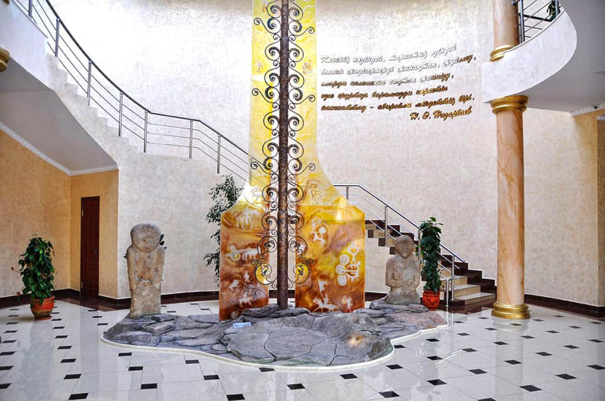
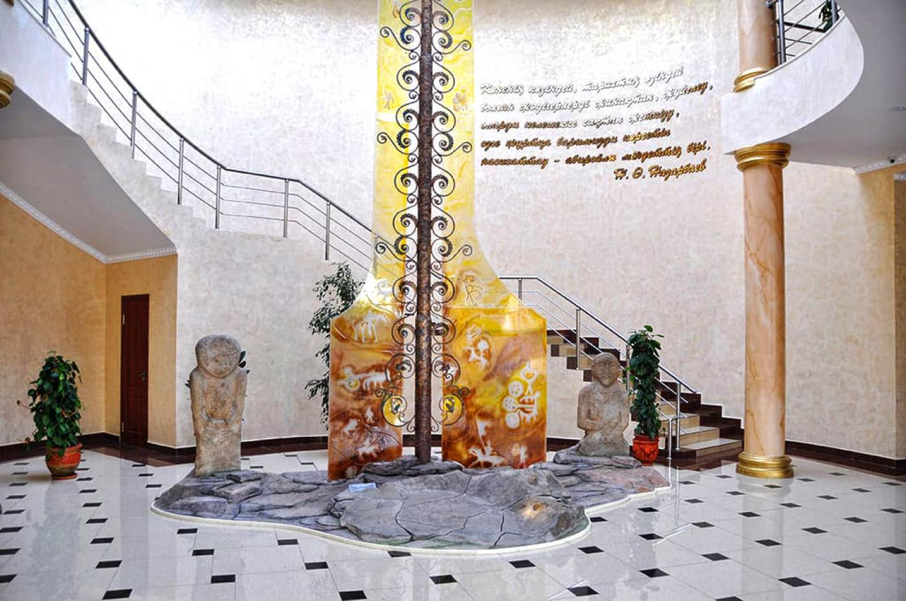

A museum that reveals the rich history and culture of Southern Kazakhstan
The Shymkent Regional Museum is one of the oldest and largest museums in the region. It houses a rich collection of archaeological findings, ethnographic exhibits, historical documents, and artifacts.
- Established: 1920
- Exhibits: Over 100,000
- Sections: Archaeology, ethnography, nature, history
- Importance: A regional center of cultural heritage
What to See?
- 🺠Artifacts from the ancient Otyrar oasis
- 🧵 Traditional costumes and yurts
- 📚 Historical documents and photographs
How to Get There?
📠Shymkent, Zheltoksan Street 16
🚌 Public transport, “Museum” bus stop
Useful Information
ⰠOpening hours: 09:00 – 18:00 (closed on Mondays)
🎟️ Ticket: 500 KZT (adults), 200 KZT (children)
📸 Photography is allowed
The Shymkent Museum is a window into the rich past of the region – a place of interest for both adults and children!
PHOTOS

 
